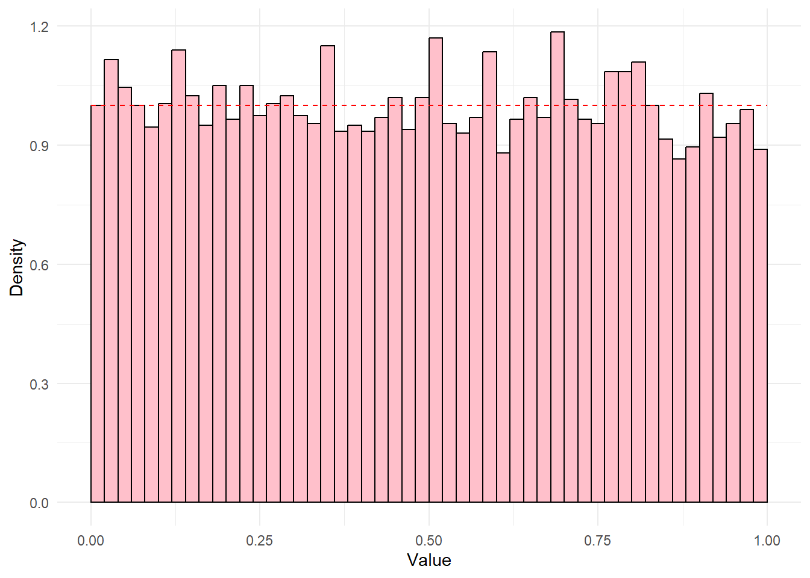

Warning: package 'ggplot2' was built under R version 4.5.3
Warning: package 'tidyr' was built under R version 4.5.3
Warning: package 'readr' was built under R version 4.5.3
Warning: package 'purrr' was built under R version 4.5.3
Warning: package 'stringr' was built under R version 4.5.3
Warning: package 'forcats' was built under R version 4.5.3
Warning: package 'lubridate' was built under R version 4.5.3
Warning: package 'invgamma' was built under R version 4.5.2
Warning: package 'patchwork' was built under R version 4.5.3
Rosenblatt transformation
The Rosenblatt transformation is the multivariate extension of the probability integral transformation. It applies the conditional CDF of each element given the elements before it. This removes the modeled dependence sequentially. If the proposed joint distribution is correct, the resulting transformed data are independent Uniform(0, 1) random variables.
Let
\[
X=(X_1,\ldots,X_p)^{T}
\]
be a continuous random vector with joint distribution function \(F(x_1, \dots, x_k)\).
We define the Rosenblatt transformation as follows:
\[X \sim N(\mathcal{M} + w \mathcal{A}, w [\Sigma_{D} \otimes \dots \Sigma_{1}])\]
Univariate Skewed-t
Take \(X = \mu + W A + \sigma \sqrt{W} Z, \quad Z \sim N(0, 1)\) where \(W > 0\) is a latent mixing variable. Conditional on \(W = w, X|W = w \sim N(\mu + wa, w \sigma^2)\). That is, if we knew the value \(w\) of the latent mixing variable, \(X\) would follow a normal distribution with mean \(\mu + w a\) and variance \(w \sigma^{2}\).
In the univariate case, the Rosenblatt transformation is the same as the probability integral transform.
First, we can obtain the marginal CDF of \(X\) by integrating out the dependence on \(W\). \[
\begin{aligned}
F_{X}(x) &= P(X \le x) \\
&= \int_{0}^{\infty} P(X \le x|W = w) f_{W}(w) dw \\
&= \int_{0}^{\infty} f_{X|W}(x|w) f_W(w) dw \\
&= \int_{0}^{\infty} \Phi\left(\frac{x-\mu-wa}{\sigma \sqrt{w}}\right) f_W(w) dw
\end{aligned}
\]
Then, we can apply this CDF to the draws. If the model is correct, \(U \sim \text{Uniform}(0, 1)\).
nu <-4# generate univariate valuesmu <-1variance <-2skew <-3# create univariate drawsunivar_skewt <-rtskewt(n =1e4, mu = mu, sigmas =list(matrix(variance)), skew = skew, nu = nu)skew_t_cdf <-function(x, mu, variance, skew, nu) { shape <- nu/2 rate <- nu/2 integrand <-function(w) {pnorm((x - mu - w * skew) /sqrt(w * variance)) *# f(x|w)dinvgamma(w, shape = shape, rate = rate) # f(w) }# integrate out dependence on wintegrate(integrand, lower =0, upper =Inf)$value}res <-numeric(length(univar_skewt))for (i inseq_along(univar_skewt)) { # apply to each draw res[i] <-skew_t_cdf(x = univar_skewt[i], mu = mu, variance = variance,skew = skew, nu = nu)}ggplot() +geom_histogram(aes(x = res, y =after_stat(density)), fill ="white", color ="black", breaks =seq(0, 1, length.out =51)) +geom_function(fun = dunif, color ="red", lty =2) +labs(x ="Value", y ="Density") +theme_minimal()

Multivariate Skewed-t
Now suppose we observe a bivariate skewed-t.
\(X = \mu + W \mathbf{a} + \sqrt{W} \mathbf{Z}, \quad Z \sim N_{2}(0, \Sigma)\)
Now we need the Rosenblatt to compute \(U_{1} = F_{X_{1}}(x_{1})\) and \(U_{2} = F_{X_{2}|X_{1}}(x_{2}|x_{1}).\)
Multivariate Skewed-t \(X_{1}\)
First, consider \(X_{1}\). Conditional on \(W = w, X_{1}|W = w \sim N(\mu_{1} + w a_{1}, w \sigma_{1}^{2})\). This is the same as the univariate case we defined above.
nu <-4# generate bivariate valuesmu <-c(1, 2)variance <-matrix(data =c(1, 0.5, 0.5, 3), nrow =2)skew <-c(0.2, 0.4)bivar_skewt <-rtskewt(n =1e4, mu = mu, sigmas =list(variance),skew = skew, nu = nu)
Multivariate Skewed-t \(X_{2}\)
Once we have observed \(X_{1} = x_{1}\), we have more information about the mixing variable \(W\). Instead of using \(f_{W}(w)\), we want to find \(f_{W|X_{1}}(w|x_{1})\).
Multivariate Test of Uniformity based on Normal Quantiles by Yang and
Modarres (2017)
data: U
Cn = 2.3404, p-value = 0.3103
alternative hypothesis: Sample U does not follow uniform distribution.
Multivariate Test of Uniformity based on Normal Quantiles by Yang and
Modarres (2017)
data: U_wrong
Cn = 40.004, p-value = 2.057e-09
alternative hypothesis: Sample U_wrong does not follow uniform distribution.